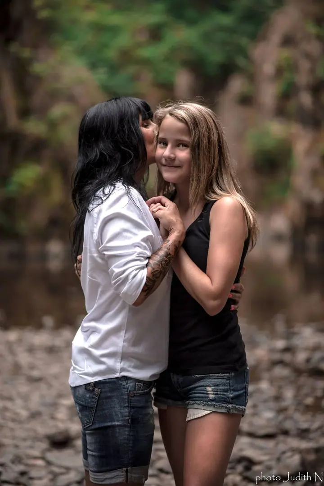
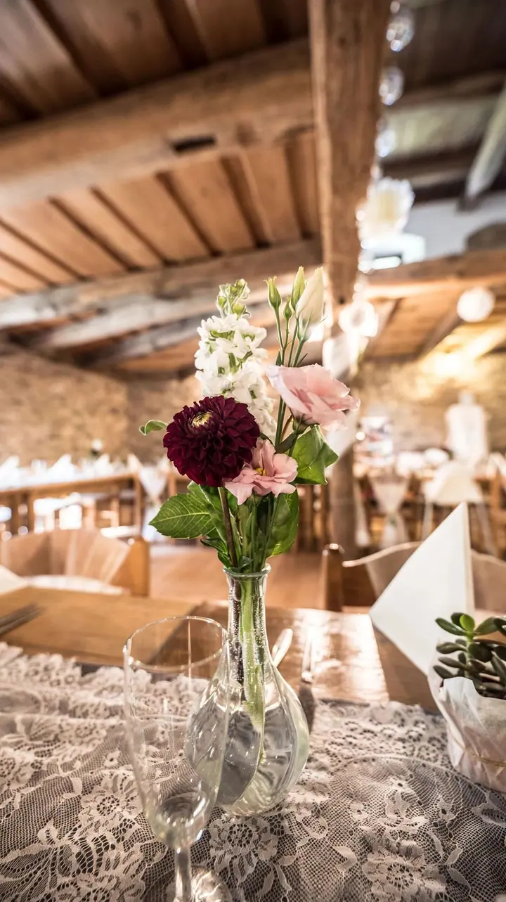
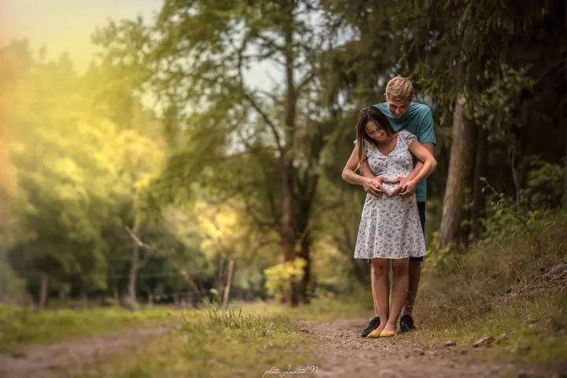

01 / 04
Fotografie realit
Fotím nemovitosti tak, aby každý z inzerátu poznal, jak se na místě bude cítit. Nezapomínám ani na hezká zákoutí zahrad.
Zeptat se na termín→


Fotím svatby, rodiny i domovy
Zeptat se na termín →(01) Ahoj
Jmenuji se Jitka Nová a v Pardubicích a okolí fotím reality , svatby i rodiny . Nejvíc mě baví momentky a přirozenost, ať jde o útulný obývák, nebo obřad pod širým nebem.
(02) Co fotím
01 / 04
Fotím nemovitosti tak, aby každý z inzerátu poznal, jak se na místě bude cítit. Nezapomínám ani na hezká zákoutí zahrad.
Zeptat se na termín→02 / 04
Celý den od příprav přes obřad a skupinky až po večerní zábavu. Mám ráda přirozený a uvolněný styl a fotky ráda upravím i do černobílé.
Zeptat se na termín→03 / 04
Rodiny fotím venku, v přírodě. S sebou mám rekvizity včetně retro oblečků a doplňků a předem vám poradím, co si vzít na sebe.
Zeptat se na termín→Dále nabízím
Reportáž je moje krevní skupina. Fotím momentky z akcí, závodů i firemních setkání tak, jak se opravdu staly.
↗(04) Postup
Od první zprávy po hotovou galerii.
Krok 1 z 4
Napište mi přes formulář, co si představujete, kdy a kde. Ozvu se vám s nabídkou a volným termínem.
Krok 2 z 4
Projdeme spolu detaily. U rodinného focení poradím, co si vzít na sebe, u svatby probereme harmonogram dne a u realit, co všechno chcete ukázat.
Krok 3 z 4
Snažím se, aby to byl příjemný zážitek, i když stojíte před foťákem poprvé. Hlídám světlo a momenty a nechávám věci plynout přirozeně.
Krok 4 z 4
Fotky pečlivě upravím, u svatby všechny včetně černobílých verzí. Svatební fotky předávám přes online úschovnu do 3 týdnů.
Mám oko na ty správné momentky
(05) Za objektivem
Vystudovala jsem obor grafik/aranžér, ale jako většina jsem se nejdřív minula povoláním a pracovala jako kontrolorka na výstupní kontrole. Pak přišlo období svateb, od zajištění ubytování až po organizaci na místě, a k tomu jsem občas nějakou svatbu i nafotila.
Hlavně jsem ale začala fotit reality a v průběhu let mi před fotoaparátem prošla spousta rodin. U nemovitostí chci, aby z fotek bylo cítit, jaké to tam je. U lidí mám ráda uvolněnou atmosféru a momentky, které nikdo nenaaranžoval.
Dnes se vracím ke svatbám, tentokrát hlavně s foťákem v ruce. Fotím na Nikon se širokoúhlou Sigmou, Nikkorem 85 mm a Sigmou 70–200, a ráda si pohraju i s černobílými variantami.
Jitka
Jitka Nová · Fotografka realit, svateb a rodin
Celý den od příprav do 20 hodin vyjde na 15 000 Kč. V ceně je úprava všech fotografií včetně černobílých, obvykle kolem 550–600 snímků podle počtu hostů. Jiný časový rozsah řeším individuálně.
Rodiny fotím jen venku. Balíček 5 fotografií stojí 1 200 Kč, každá další 250 Kč. Mám s sebou rekvizity včetně retro oblečků a doplňků.
Fotografie realit začínají na 2 500 Kč. Konečná cena záleží na velikosti nemovitosti a na tom, co všechno chcete ukázat, včetně zahrady.
Ano, reportáž je moje krevní skupina. První hodina stojí 2 000 Kč, každá další započatá 1 600 Kč. Ve galerii najdete třeba focení se Zdeňkem Pohlreichem.
(07) Kontakt
Napište pár vět o tom, co si představujete, a termín, který se vám hodí.